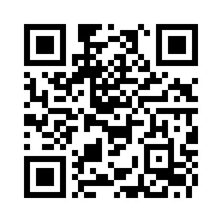

Introductions
- Who are you?
- Why are you here?
- What do you hope to get out of this class?
- What are we going to talk discuss ?
- We will see how exposed we really are online.
- We will learn about easy steps we can take to improve
our online privacy, security and anonymity.
- We will focus on the most important actionable things
we can do to ensure privacy/anonymity online or on our phones.
Thought of the Day
- If you aren't paying for a useful online service, you are the product.
Erie Tech Coincidences and Other Creepy Stuff
- Related ads appearing after talking with friends
about specific topics.
- You meet someone one day and then start seeing them
in your socials the next.
- How about that Ring Superbowl ad this year?
How Exposed are We
Our electronic gadgets, phones, computers leak information about
us. The data is collected by companies. Companies who collect our
data often sell it to others. We happily give our data away for
free. Companies who collect it are making money off it.
- Mobile Phone Provider - location data, call
records, messaging records, device identifiers, data usage
statistics
- Internet Service Provider - websites visited,
devices used, location, app usage
- Smart TV - viewing habits, search history,
automatic content recognition, location
- Smart Home Devices - Alexa, Google Nest,
Amazon Echo, Apple HomePod... microphones
- Streaming Services - viewing habits, search
history, location, device type, demographics (age/gender/zip
code)
- Search Engines - query history, browsing
history, IP address,
- Social Media - contacts, user interactions,
search history, watch history, posts/comments, likes/shares, time
spent
- Email Services - recipient lists, subject
lines, email content, contacts, attachments
- Credit Reporting Companies - borrowing and
repayment history, public records, credit inquiries
- Banks - transaction details
- Credit Card Companies - transaction details,
spending patterns, demographics
- Facial Recognition and license plate readers
everywhere
- Smart Cars - crotch cams, GPS, network
connectivity, microphones
Tip: Ever actually read those privacy policies? Maybe it's time to reconsider.
Google Yourself
Search for your name, email address and phone number on popular
search engines. Make a habit of searching for these things
periodically. Try to opt-out or remove entries that contain your
personal information.
See if You've Been Part of a Security Breach
Check your name/username/email address to see if your data was
part of a security breach. Some of theses will send you a
notification if your email address is discovered in a security
breach.
See What Web Sites You Visit Know About You
Go to a browser leak test site and see what it knows about you
based on information collected from your browser.
Further reading on Data
Collection Techniques
Use Privacy Focused Browsers
There are settings in the browser to disallow third party
cookies and also set a do not track header. Delete cookies often.
(<- remind me to explain cookies now) Using more than one
browser or using specific browsers for specific things makes you
harder to track.
- Brave -
Windows/Mac/iPhone/Android/Linux (open source) <-- explain open
source
- Duck Duck Go -
Windows/Mac/iPhone/Android
- Mulvad -
Windows/Mac/iPhone/Android/Linux (open source)
- Vivaldi -
Windows/Mac/iPhone/Android/Linux
- LibreWolf -
Windows/Mac/Linux (open source)
- Tor
(special case)
Tip: Use a
different browser or profile for banking, investments, health care
and bills than you do for browsing the internet, using social media
and shopping. Clear your cookies often.
Privacy Focused Browser Extensions
If you can't give up Edge or Safari or some other commercial
browser, you may consider using a privacy extension.
Password Managers
Using a password manager is highly suggested. They create long,
complex passwords and remember them for you. They will alert you
about weak or duplicate passwords. Some offer monitoring to alert
you if a password has been compromised. You can use the same
password manager/account across all your devices.
Privacy Focused Search Engines
Use search engines that don't collect data about you and are run
by companies who don't sell your data.
- Duck Duck Go -
Based in the US. Privately owned. Open Source.
- Startpage -
Based in the Netherlands. Privately owned.
- Qwant - Based in
France. Privately owned.
- Swisscows -
Based in the Switzerland. Privately owned.
- Brave Search
- Based in the US. Privately owned.
- Ecosia - Based
in Germany. Non-profit. Donates to environmental causes.
- Goodsearch
- Based in the US. Privately owned. Donates to charitable
causes.
- Mojeek - Based
in the UK. Privately owned.
- Gibiru - Based in
Ladonia (Sweeden-ish). Owned by Steven Marshall.
- SearXNG -
No central headquarters. Open Source. Special case.
Privacy Focused Email Providers
Secure email providers encrypt your data at rest. They can also
provide end-to-end encryption of email allowing you to send
sensitive information that can only be viewed by the recipient.
Look for a provider headquartered in a country with strict privacy
laws. The provider should have a no logs policy verified by
external audit.
Temporary and Disposable Email Addresses
Use your real email address for important things like health
care, banks, bills, retirement accounts. Use aliases or temporary
email addresses for other types of accounts.
(explain the difference between disposable addresses and
aliases)
- Maildrop –
Free and open source disposable e-mail addresses service.
- 10 Minute
Mail - Free and anonymous temporary email.
- erine.email -
Unlimited disposable email addresses to avoid spam.
- Mailsac -
Open source disposable email hosting.
- inboxkitten - Open source
disposable email.
- SimpleLogin - A tool to easily
create aliases for your email. Allows 15 aliases for free.
- AnonAddy - A
tool to create aliases that forward to their email address. Allows
unlimited aliases.
- Firefox
Relay - Create aliases that forward to your real inbox.
Allows 5 aliases.
- Proton
Mail - Create aliases that forward to your real
inbox.
Consider Using a Privacy VPN (virtual private
network)
A VPN hides your real IP address. A VPN makes it appear that you
are accessing the internet from some other city/state/country. VPNs
may also use encrypted DNS (domain name service) that prevent your
ISP from knowing which sites you visit.
- Proton VPN - is
headquartered in Switzerland. This location is significant for its
privacy laws, which are among the strictest in the world, enhancing
the security and confidentiality of its users.
- NordVPN - is
headquartered in Panama. This location is significant because
Panama has strong privacy laws and does not require companies to
retain user data, which supports NordVPN's strict no-logs
policy.
- Surfshark - is
headquartered in Amsterdam, Netherlands. This location allows the
company to operate under a no-logs policy, ensuring user
privacy.
- ExpressVPN
- is headquartered in the British Virgin Islands. This location is
significant for privacy, as the British Virgin Islands have
favorable laws regarding data protection.
- IVPN - is
headquartered in Gibraltar.
- Mulvad VPN - is a
commercial VPN service based in Sweden. Being based in Sweden
is significant for Mullvad's operations due to the country's strong
privacy laws.
Phone Security
- Minimize how many apps you install
- Remove apps you don't use
- Pay very careful attention to app permissions for
contacts, camera, microphone and location
- Opt out of marketing - both for your phone and your
mobile provider.
- Allow permissions to apps only while they are
running
- Use a browser instead of an app when possible
- Consider disabling AI voice activation
- Disable AI from learning from apps
- Consider using a long passcode instead of facial
recognition
- Use a privacy focused map app (Magic Earth, CoMaps)
- Avoid using bio-metric authentication, use a long
pin code instead
- Disable opt-in marketing
- Use a secure browser
- Consider using a VPN
Tip: Restart your phone at
least once per week
Consider Freezing Your Credit
Freezing your credit will make it more difficult for anyone to
open a new bank or credit card account if your information falls
into the wrong hands. You will also get alerts regarding unusual
activity.
Privacy Related Organizations
These organizations provide information on current privacy
issues, tools, training and other resources.
Other Topics
- 2FA (Two Factor Authentication) apps
- Disposable/burner phone numbers - Sideline, Hushed,
Burner, Flyp
- Content removal services/Data Broker Opt-out
- Surveillance Pricing
- Antivirus - Maybe not needed in 2026
- Secure Messaging Apps - Signal, Session, Element
- Social Media - Don't share too much. Avoid using if
possible.